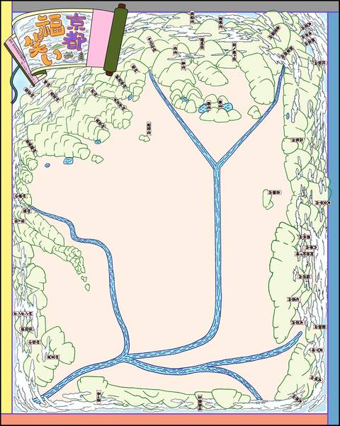

Top
NPO法人Board Game Japanは、学習要素を含むボードゲームの開発と、ボードゲームの開発・振興・研究に向けたプラットフォームの構築を行っています。
NPO法人Board Game Japanは、学習要素を含むボードゲームの開発と、ボードゲームの開発・振興・研究に向けたプラットフォームの構築を行っています。
NPO法人Board Game Japanの概要です。
正解のない問題に向き合い、自ら答えを導き出す能力が問われる時代となった現代において、教育ツールとしての玩具は数多く開発され出版されている。
近年は国内においても、他者とのコミュニケーション力や論理的思考力を身につけるためのツールとして、あるいは最新の科学研究や社会・経済の仕組みなどを一般の人に広く伝える媒体として、ボードゲーム*の可能性に注目が集まっている。かく言う私たちも、ここ数年、教育や研究の現場におられる方々とともに、いくつかのゲームの開発に携わってきた。
しかしながら、ボードゲーム大国と言われるドイツなどと比較すると、国内での開発・振興はまだ途上にあると言わざるを得ない。
例えばスポーツの野球やサッカーであれば、子どもの頃から参加できる少年野球チームやサッカーチームが全国に存在することや、高校でそれぞれ約17万人と言われる競技人口の厚みがあることが、世界に通用するレベルのプロ選手たちが育つ環境を支えている。
ボードゲームに関しても、私たちが期待している教育的効果があるならば、より多くの子どもたちに親しんでもらい国内のボードゲーム人口を増やすことが、世界レベルの研究者、デザイナー、クリエイター、プログラマー、科学コミュニケーターなどの輩出に寄与すると考えられる。もちろん、それ以外のさまざまな仕事に就く人たちにとっても、子どもの頃からコミュニケーション力や論理的思考力を身につけることは非常に有意義である。
現在の教育システムや子育て環境の中では、個人や幾人かのグループだけで開発されたゲームは世の中に浸透しにくい。そこで私たちは、主に学習要素を含むゲームの開発・振興・研究を目的としたプラットフォーム組織を作ることで、日本のボードゲーム人口を増やすとともに、日本発のボードゲームを世界に広めていきたいと考え、ここにNPO法人を設立する。
* ここでの「ボードゲーム」はカードゲームなども含むアナログゲームの総称として広義で使用している
平成29年1月に発起人が呼びかけを行い、これに賛同者が集まって法人化の方向性を決め、平成29年1月28日の設立総会を経て、法人化の意思を確認した。
開発中のボードゲームを紹介します。
「とらとら」は、一般的には「加藤清正の虎退治」や「和籐内の虎退治」とも呼ばれる、近松門左衛門の浄瑠璃「国性爺合戦」から誕生した拳遊びで、日本の伝統的なお座敷遊び・お茶屋遊びとして知られています。
「とらとら」では、まず対戦する双方が屏風の裏に隠れます。その後、音頭に合わせて、[清正の槍(または和籐内の鉄砲)][虎][(清正の母親の)老婆]の3つの型のいずれかの格好をしながら屏風から出て来て、双方の型の組み合わせで勝敗を決めます。
勝敗は、[グー][チョキ][パー]のジャンケンと同様の「3すくみ」の関係性で決まります。 清正は虎を退治するので、[清正の槍]は[虎]に勝ちます。虎は老人より強いので、[虎]は[老母]に勝ちます。 そして、[老婆]は自分の息子である[清正の槍]に勝つという関係性で、勝敗を決します。
「とらとら」を基に開発した「とらとら将棋」では、よりゲームを楽しむために[忍者]と[芸者]を追加し、[清正][忍者][虎][芸者][老婆]の5つの駒でゲームを行います。これらの5種類の駒を将棋盤を模した盤上に並べ、駒を動かしてゲームを行います。
駒同士の勝敗は、次の関係性で決します。
「とらとら将棋」はプレイヤー2人と審判1名で行うボードゲームで、次の流れで遊びます。
「京都福笑い」は、何もない京都市街の地図に、町を形成する通りや川、お寺や神社、目印となる建物などのパーツを並べ、京都市街の地図を完成させるボードゲームです。 京都の街中の土地勘を養い、町の作りを学ぶ地理学習ツールとしての活用のほか、対象とする時代を変えることで、様々な時代の京都の歴史を俯瞰して学ぶ歴史学習ツールとしても活用できます。
「Party×Party」は、友達の誕生日パーティーを企画することで、企画力や並列処理の思考を学ぶボードゲームです。
Board Game Japanへのお問い合わせには、下記のフォーム(またはフォームを直接表示)をご利用ください。